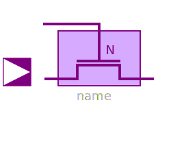
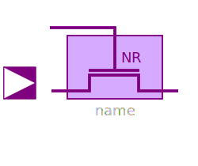
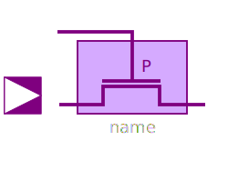
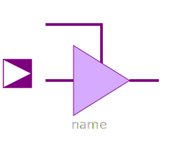
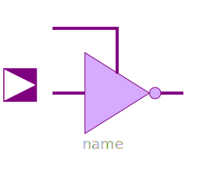

| Name |
Description |
|  NXFERGATE |
Transfergate with enable active high |
|  NRXFERGATE |
Transfergate with enable active high. Output strength
reduced. |
|  PXFERGATE |
Transfergate with enable active low |
 PRXFERGATE PRXFERGATE |
Transfergate with enable active low. Output strength
reduced. |
|  BUF3S |
Tristate buffer with enable active high |
| BUF3SL |
Tristate buffer with enable active low |
| INV3S |
Tristate Inverter with enable active high |
|  INV3SL |
Tristate inverter with enable active low |
 WiredX WiredX |
Wired node with multiple input and one output |